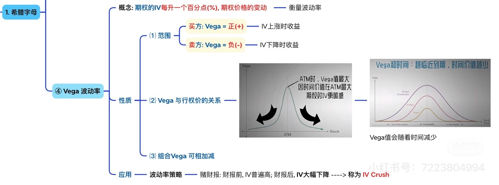

Step 1
先抓住这章想解决的问题
先读摘要和小目录，确认这章是在讲概念、定价、风险还是执行，不要一上来就陷进公式或策略名称。
Greeks 与仓位行为篇 · Batch 6
理解隐含波动率变化如何重新定价期权，以及事件前后 Vega 暴露为何会显著影响盈亏。
先把这一章到底在解决什么问题讲清楚，再带着问题回到正文，效率会高很多
理解隐含波动率变化如何重新定价期权，以及事件前后 Vega 暴露为何会显著影响盈亏。
期权章节最容易失焦的地方，是一上来就陷进术语、腿结构和策略名字。更好的读法是先确定这章主要在讲概念、风险还是执行，再带着这个问题去读正文和 payoff 图。
期权最容易卡在名词和策略名上，所以这套教材默认按“先轮廓、再风险、后执行”来读
先读摘要和小目录，确认这章是在讲概念、定价、风险还是执行，不要一上来就陷进公式或策略名称。
先看最大收益、最大亏损、平衡点和亏损最容易扩大的区域，再回头理解每一条腿到底在做什么。
策略理解完成后，才去判断它更适合什么市场环境、什么波动结构，以及什么时候宁可不做。
正文按完整阅读链组织，建议先抓主结论，再回到分节例子逐段吃透。
本章主要基于以下图片材料整理并扩写：
Greeks 总纲，说明 Vega 是理解期权价格波动来源的关键变量之一； 
Vega 主图，强调“IV 每变化 1 个百分点，期权价格会如何变化”、Vega 在 ATM 附近更大、到期越近 Vega 往往越小，以及财报后的 IV Crush。 如果你只记一句话，那就是：
Vega 讲的不是股价涨跌，而是“市场对未来波动的预期一变，期权价格会不会跟着被重新定价”。
很多人第一次做财报前期权，都会有一种非常挫败的体验：
- 我明明判断了公司要大涨；
- 财报出来后，股价也真的涨了；
- 可我的 Call 却没有想象中赚那么多，甚至还可能不怎么赚钱。
这种时候，背后最常见的解释不是 Delta 不见了，而是 Vega 开始说话了。
因为期权价格里，除了方向和时间，还有一个特别重要的变量：
市场对未来波动会有多大，原本是怎么想的；事件落地后，又改成怎么想。
这层变化，Vega 专门负责量它。
这一章第一次读，最容易误会的是：Vega 好像只属于波动率高手。
其实你第一遍只要先抓两句：
1. Vega 衡量的是 IV 变化，会把期权价格推多远。 2. 方向对，不代表一定赚钱，因为 IV 也会重新定价。
这两句先站稳，很多财报前后的困惑就有解释了。
第二遍再去补：
前面几章里，你已经接触过一个关键词：
最朴素地理解，IV 不是股票已经怎么动了，而是市场正在给“未来可能怎么动”标价。
如果大家都觉得：
那期权往往会被定得更贵。
相反，如果市场觉得：
那期权价格往往就会被压低。
而 Vega，要量的就是：
当 IV 本身升高或下降时，期权价格理论上会被拉动多少。
Vega 最常见的读法可以写成：
在其他条件暂时不变的前提下，IV 每变化 1 个百分点，期权价格理论上会变化多少。
如果一张期权的 Vega 是：
那最直观的意思就是：
对应一张标准合约，就是：
同样要记住，这还是一个近似、瞬时的读法。
真实市场里，Vega 不会脱离：
但只要你先抓住这句话，已经够你避开很多坑：
IV 不是背景音，它会直接改变期权价格。
大多数 long option 仓位，通常都是正 Vega。
这意味着：
这对买方很重要，因为它意味着：
比如财报前：
这就是 Vega 给买方带来的那一层“预期溢价”。
如果买方通常是正 Vega，那卖方通常就是负 Vega。
这意味着：
你可以把它理解成：
所以很多卖方策略看起来舒服的时段，往往也是：
但和 Theta 一样，这也不是免费午餐。
卖方如果碰上：
那负 Vega 就会开始给你压力。
图片里有一个非常关键的提醒：
这背后可以这样理解：
ATM 期权最像一张“结果还没定”的合同。
所以：
这和前面 Theta、Gamma 在 ATM 附近更敏感，有一种内在呼应。
ATM 常常就是期权世界最“贵”、也最“敏感”的中间地带。
另一条很重要的规律是：
为什么？
因为 Vega 量的是“未来波动预期的变化”值多少钱。
如果一张期权离到期还有很久：
反过来，如果一张期权明天就到期：
所以你以后如果同时看两张期权：
你应该立刻想到：
期权新手特别容易在财报前犯一个错误：
比如财报前一天，你看多某只股票，买了一张 ATM Call。
你以为自己买的是：
但真实情况常常是：
如果财报结果一出来：
这时候，就算你方向没完全错，你的 Vega 这一侧也可能遭到打击。
所谓 IV Crush，最朴素的理解就是：
重大事件落地后，IV 快速回落，原本被高预期撑起来的期权价格也跟着被压下去。
举个最常见的例子：
假设 AAPL 财报前：
财报公布后：
结果就是：
这不是期权“失灵”了，而是你之前低估了 Vega。
所以财报前做方向单时，一定要问自己：
很多人会把 Vega 误以为是“只属于波动率交易者”的概念。
其实不是。
只要你买卖的是期权，你几乎都在暴露给 Vega。
你买一张 Call，不只是看多股价。
你同时还在持有一张：
的合约。
所以方向交易者如果只看 Delta，不看 Vega，就特别容易在这些时刻被打脸：
你会觉得：
因为这笔交易从来就不只有方向。
如果你买的是较长期限的 LEAP Call：
这意味着：
所以期限更长，不代表你可以完全不管 Vega。
它只是意味着：
不对。
IV 更准确地说，是市场当前给“未来可能波动”定出来的价格。
它反映的是预期，不是承诺。
IV 高不代表结果一定大幅波动； IV 低也不代表结果一定风平浪静。
它只是告诉你：
这恰恰是很多人第一次做财报期权会踩的坑。
因为方向对，只解决了 Delta 那一侧的问题。
如果：
那 Vega 完全可能把你原本以为的利润吃掉一大块。
通常正好相反。
越接近到期，未来剩余时间越短，IV 再怎么变化，对整张合约还能产生的影响也更有限。
所以一般来说：
也不对。
只要你买的是期权，不管是：
你都在和 Vega 打交道。
区别只是：
1. Vega 衡量的是 IV 每变化 1 个百分点，期权价格理论上会变化多少。 2. 买方通常是正 Vega，卖方通常是负 Vega。 3. ATM 附近、期限更长的期权，Vega 往往更明显。 4. 越接近到期，Vega 一般越弱；但财报等事件前后，它依然可能很关键。 5. 方向对不代表一定赚钱，因为期权价格还会被 IV 的重新定价影响。
如果 Theta 让你意识到“时间会不会先把你磨掉”， 那 Vega 就是在提醒你：
1. 一张期权 Vega 是 0.12，IV 从 30% 升到 31% 时，这个数字该怎么直觉理解？ 2. 为什么很多 ATM 期权的 Vega 比深 ITM、深 OTM 更显眼？ 3. 为什么长天期合约通常比短天期合约更需要关心 Vega？ 4. 什么是 IV Crush？为什么它常在财报后让买方感到很挫败？ 5. 如果你做的是方向性 Call，而不是波动率策略，为什么仍然不能忽略 Vega？
Vega 真正教你的，是别把期权只当成“方向押注”，因为市场对未来波动的定价一变，整张合约的价格就可能跟着换一套逻辑。
到这里，Greeks 这套语言系统你已经有了。
下一章开始，我们把这些语言重新落回最常见的真实应用：